Wired Artikel
Batch 10 - das Wired 2.0
Batch 10 ist das umfassendste Wired-Update überhaupt. Mit diesem Update wurde das Einstellen der Wireds auf ein neues Niveau gehoben. Es beinhaltet nicht nur irgendwelche neuen Wireds, sondern auch erweiterte Einstellungen für die aller meisten Wireds. Im Rampenlicht stehen besonders die "Selektoren", ein völlig neuer Wiredtyp. Wir werden in diesem Artikel die Erweiterungen und die Selektoren betrachten. Dieser Artikel wird eher für fortgeschrittene sein, daher möglicherweise nicht für jeden leicht nachvollziehbar werden. Aber vorher eine kurze Geschichte zu Batch 10...
Die Hintergrundgeschichte
Am 05.06.2023 begann die Testphase von Batch 10 im Sandbox Hotel (Testhotel). Wie bereits bekannt sein dürfte, arbeitet der Habbo User sirjonasxx aus Habbo.NL mit dem Habbo Dev-Team zusammen, um die Wireds zu verbessern. Dieses gesamte Projekt wurde von Sulake Mitarbeiter als "Wired 2.0" bezeichnet. Allerdings ist Wired 2.0 durch Batch 10 mit den Selektoren und erweiterten Einstellungen Wirklichkeit geworden und laut sirjonasxx das echte Wired 2.0. Dementsprechend war die Testphase auch ein ganz besonderes Ereignis. Die Wired Tester (Team aus gewöhnlichen Habbo User aus verschiedenen Hotels, die von sirjonasxx auserwählt wurden) durften während des Testvorgangs keine Informationen nach außen tragen. Andere Sandbox User durften diese Testräume nicht sehen und betreten und die Tester erhielten sogar ein benutzerdefiniertes Classic-Client, um die erweiterten Einstellungen am Wired sehen und öffnen zu können. Diese Tester sind äußerst erfahrene Wired-Experten und beeindruckend sind ihre ersten Worte, als sie die Selektoren zum ersten Mal öffneten:
"Ich bin schockiert... Das ist verrückt." (ferrazmatheus)
"Vielleicht weine ich auch nur vor Glück wegen der Selektoren, einfach wow." (Kaukoyhteys)
"Es ist das Paradies." (surab1996)
"Eine neue Welt 🤯" (Jolan bekannt als: jolan3000:.:.)
(Zitate wurden aus dem Englischen ins Deutsche übersetzt)
Erweiterte Einstellungen
72 Wireds besitzen die erweiterten Einstellungen. Die allermeisten müssen per Klick geöffnet werden. Nur einige wenige haben die Erweiterung bereits standardmäßig offen, weil dies für die betroffenen Wireds immer notwendig ist (z. B. "Möbel zu Möbel bewegen" oder "Möbel stimmt überein").
Die Hintergrundgeschichte
Am 05.06.2023 begann die Testphase von Batch 10 im Sandbox Hotel (Testhotel). Wie bereits bekannt sein dürfte, arbeitet der Habbo User sirjonasxx aus Habbo.NL mit dem Habbo Dev-Team zusammen, um die Wireds zu verbessern. Dieses gesamte Projekt wurde von Sulake Mitarbeiter als "Wired 2.0" bezeichnet. Allerdings ist Wired 2.0 durch Batch 10 mit den Selektoren und erweiterten Einstellungen Wirklichkeit geworden und laut sirjonasxx das echte Wired 2.0. Dementsprechend war die Testphase auch ein ganz besonderes Ereignis. Die Wired Tester (Team aus gewöhnlichen Habbo User aus verschiedenen Hotels, die von sirjonasxx auserwählt wurden) durften während des Testvorgangs keine Informationen nach außen tragen. Andere Sandbox User durften diese Testräume nicht sehen und betreten und die Tester erhielten sogar ein benutzerdefiniertes Classic-Client, um die erweiterten Einstellungen am Wired sehen und öffnen zu können. Diese Tester sind äußerst erfahrene Wired-Experten und beeindruckend sind ihre ersten Worte, als sie die Selektoren zum ersten Mal öffneten:
"Ich bin schockiert... Das ist verrückt." (ferrazmatheus)
"Vielleicht weine ich auch nur vor Glück wegen der Selektoren, einfach wow." (Kaukoyhteys)
"Es ist das Paradies." (surab1996)
"Eine neue Welt 🤯" (Jolan bekannt als: jolan3000:.:.)
(Zitate wurden aus dem Englischen ins Deutsche übersetzt)
Erweiterte Einstellungen
72 Wireds besitzen die erweiterten Einstellungen. Die allermeisten müssen per Klick geöffnet werden. Nur einige wenige haben die Erweiterung bereits standardmäßig offen, weil dies für die betroffenen Wireds immer notwendig ist (z. B. "Möbel zu Möbel bewegen" oder "Möbel stimmt überein").
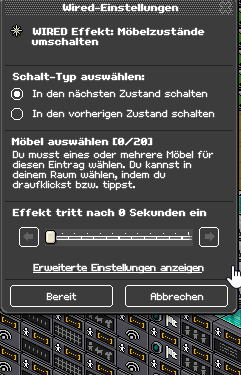
Erweiterte Einstellungen öffnen
Nicht jedes Wired hat immer dieselben Einstellungsmöglichkeiten im erweiterten Modus. Welche es gibt, erfahrt Ihr jetzt:
"Möbelquelle auswählen" beinhaltet je nach Wired folgende Optionen:
- Ausgewählte Möbel nehmen (das ist standardmäßig ausgewählt und bedeutet, dass die für das Wired markierten Möbel als Möbelquelle genutzt werden. Es verhält sich also klassisch und ändert nichts am Wired)
- Möbel vom Selektor nehmen (Alle Möbel, die der Selektor zur Verfügung stellt, werden genutzt)
- Möbel vom Signal nehmen (Alle Möbel, die aus dem Signal-Stapel weitergeleitet werden, werden genutzt)
- Das auslösende Item nehmen (Das Möbel, dass zum Auslösen verwendet wurde, wird genutzt)
"Userquelle wählen" beinhaltet folgende Optionen:
- Den auslösenden User nehmen (das ist standardmäßig ausgewählt und bedeutet, dass wie gewohnt der auslösende User für das Wired ausgewählt wird. Es verhält sich also klassisch und ändert nichts am Wired)
- User vom Selektor nehmen (Alle User, die der Selektor zur Verfügung stellt, werden ausgewählt)
- User vom Signal nehmen (Alle User, die aus dem Signal-Stapel weitergeleitet werden, werden ausgewählt)
Die Userquelle kann NICHT in Auslöser-Wireds unter der Erweiterung bearbeitet werden. Dies kann aber mit der Bedingung "Auslöser stimmt überein" angepasst werden. Einige Selektoren besitzen statt der Userquelle die Funktion "In der Nähe von", was eine größere Erweiterung davon ist, die aber weiter unten erklärt wird. Nur Effekte und Bedingungen besitzen also auf direktem Weg die Erweiterung Userquelle (Extra-Wireds besitzen teilweise eine Abwandlung davon, was später erklärt wird).. Normalerweise wird IMMER der auslösende User ganz automatisch genommen. Z. B. ein User tritt auf eine Fliese und löst den Effekt Teleportation aus. Dabei wird der auslösende User teleportiert. Dank der Userquelle, kann jetzt definiert werden wer teleportiert werden soll und dass es nicht immer nur der Auslösende sein muss:
Es wurde eingestellt, dass beim Auslösen alle sitzenden Entitäten teleportiert werden. Dadurch wird eine weitere Erkenntnis deutlich. Normalerweise kann nur einer pro Auslösen im Wired aufgenommen werden. Durch die Erweiterung mithilfe des Selektors werden mehrere als "Bündel" genommen. Es gilt in dem Fall also nicht, dass pro 0,5 Sekunden nur ein Habbo/Bot/Haustier (= auslösende Typen oder auch Entitäten genannt) im Wired aufgenommen werden kann wie es früher der Fall war. Diese Regel gilt natürlich noch, wenn die Wireds klassisch eingestellt bleiben. Durch dieses Beispiel wird noch etwas weiteres deutlich. Der auslösende Habbo wird eigentlich nicht gebraucht, um Teleportation auszulösen, denn die Information wer teleportiert werden soll wird durch den Selektor bestimmt, daher kann sogar Effekt wiederholen statt Tritt-auf-Gegenstand genutzt werden!
"Botquelle wählen" beinhaltet je nach Wired folgende Optionen: :
Die Botquelle ist eine Erweiterung der Bot-Wireds und bestimmt welche Bot/s für das Bot-Wired ausgesucht werden soll/en. Diese Erweiterung ist aber nicht in allen Bot-Wireds enthalten, sondern nur in Effekte und Auslöser. In den Bot-Auslösern ist die Option "Den auslösenden User nehmen" nicht enthalten, aus denselben Grund wie oben erwähnt bei Möbelquelle. Die Optionen bezeichnen die Bots oft als "User", meinen aber ausschließlich die Bots. Normalerweise wird der Name des Bots im Bot-Wired eingetragen, aber durch die Erweiterung kann jeder Bot ausgewählt werden. Siehe dazu die Einstellung zur Option 4:
"Botquelle wählen" beinhaltet je nach Wired folgende Optionen: :
- Den durch Namen bestimmten Bot verwenden (Das ist standardmäßig ausgewählt und bedeutet, dass wie gewohnt der genannte Bot für das Wired ausgewählt wird. Es verhält sich also klassisch und ändert nichts am Wired)
- User vom Selektor nehmen (Alle Bots, die der Selektor zur Verfügung stellt, werden ausgewählt)
- User vom Signal nehmen (Alle Bots, die aus dem Signal-Stapel weitergeleitet werden, werden ausgewählt)
- Den auslösenden User nehmen (Der Bot, der den Wired-Stapel auslöst, wird ausgewählt)
Die Botquelle ist eine Erweiterung der Bot-Wireds und bestimmt welche Bot/s für das Bot-Wired ausgesucht werden soll/en. Diese Erweiterung ist aber nicht in allen Bot-Wireds enthalten, sondern nur in Effekte und Auslöser. In den Bot-Auslösern ist die Option "Den auslösenden User nehmen" nicht enthalten, aus denselben Grund wie oben erwähnt bei Möbelquelle. Die Optionen bezeichnen die Bots oft als "User", meinen aber ausschließlich die Bots. Normalerweise wird der Name des Bots im Bot-Wired eingetragen, aber durch die Erweiterung kann jeder Bot ausgewählt werden. Siehe dazu die Einstellung zur Option 4:
1. "Die zu bewegenden Möbel" beinhaltet folgende Optionen:
2. a. "Das Ziel-Möbel" beinhaltet folgende Optionen:
2. b. "Der Target-User" beinhaltet folgende Optionen:
Hier werden gleich 3 Erweiterungen zusammenhängend betrachtet. 1 + 2a sind im Wired-Effekt "Möbel zu Möbel bewegen" enthalten, während 1 + 2b im Wired-Effekt "Möbel zu User bewegen" enthalten ist. Zwei GIFs zeigen beide Effekte in Aktion:
- Das auslösende Item nehmen (Das Möbel, dass zum Auslösen verwendet wurde, wird genutzt. Standardmäßig bei Möbel-zu-Möbel Wired ausgewählt)
- Ausgewählte Möbel nehmen (Das für das Wired markierte Möbel wird genutzt. Standardmäßig bei Möbel-zu-User Wired ausgewählt)
- Möbel vom Selektor nehmen (Alle Möbel, die der Selektor zur Verfügung stellt, werden genutzt)
- Möbel vom Signal nehmen (Alle Möbel, die aus dem Signal-Stapel weitergeleitet werden, werden genutzt)
2. a. "Das Ziel-Möbel" beinhaltet folgende Optionen:
- Ausgewählte Möbel nehmen (Das für das Wired markierte Möbel wird genutzt. Standardmäßig bei Möbel-zu-Möbel Wired ausgewählt)
- Möbel vom Selektor nehmen (Alle Möbel, die der Selektor zur Verfügung stellt, werden genutzt)
- Möbel vom Signal nehmen (Alle Möbel, die aus dem Signal-Stapel weitergeleitet werden, werden genutzt)
- Das auslösende Item nehmen (Das Möbel, dass zum Auslösen verwendet wurde, wird genutzt)
2. b. "Der Target-User" beinhaltet folgende Optionen:
- Den auslösenden User nehmen (Das ist standardmäßig bei Möbel-zu-User Wired ausgewählt und bedeutet, dass wie gewohnt der auslösende User für das Wired ausgewählt wird)
- User vom Selektor nehmen (Alle User, die der Selektor zur Verfügung stellt, werden ausgewählt)
- User vom Signal nehmen (Alle User, die aus dem Signal-Stapel weitergeleitet werden, werden ausgewählt)
Hier werden gleich 3 Erweiterungen zusammenhängend betrachtet. 1 + 2a sind im Wired-Effekt "Möbel zu Möbel bewegen" enthalten, während 1 + 2b im Wired-Effekt "Möbel zu User bewegen" enthalten ist. Zwei GIFs zeigen beide Effekte in Aktion:
Mehr Infos zu Möbel zu Möbel und Möbel zu User.
"Bedingung stimmt überein wenn" beinhaltet folgende Optionen:
oder in Negativ Bedingungen:
Die meisten Bedingungen besitzen diese Erweiterung, entweder zu Möbel oder zu User bezogen. Am besten lässt sich diese Funktion wohl mit der Posi-Bedingung veranschaulichen:
"Bedingung stimmt überein wenn" beinhaltet folgende Optionen:
- Alle Möbel stimmen überein/Alle User stimmen überein (Standard)
- Irgendeins der Möbel stimmt überein/Irgendeiner der User stimmt überein
oder in Negativ Bedingungen:
- Irgendeins der Möbel stimmt nicht überein/Irgendeiner der User stimmt nicht überein (Standard)
- Keines der Möbel stimmt überein/Keiner der User stimmt überein
Die meisten Bedingungen besitzen diese Erweiterung, entweder zu Möbel oder zu User bezogen. Am besten lässt sich diese Funktion wohl mit der Posi-Bedingung veranschaulichen:
1. "User zum Übereinstimmen"
- Den auslösenden User nehmen (Standard)
- User vom Selektor nehmen
- User vom Signal nehmen
2. "User zum Vergleichen"
- Den durch Namen bestimmten User verwenden (Standard)
- User vom Selektor nehmen
- User vom Signal nehmen
- Den auslösenden User nehmen
Diese beiden Erweiterungen tauchen zusammen in der Bedingung "Auslöser stimmt überein" (und die negative Bedingung davon) auf. "User zum Übereinstimmen" ist der User, der überprüft werden soll. "User zum Vergleichen" ist der Musteruser, also wie der zu überprüfende User sein soll/muss. Das heißt es wird überprüft, ob der User ein Habbo User, Bot oder Haustier ist. Bei diesen Erweiterungen geht es nicht um das Definieren des Typs. Dies geschieht nämlich bereits in der Standardeinstellung. Der ausgewählte Typ wird zusätzlich verglichen, ob dieser übereinstimmt mit xy. Im nächsten GIF wird überprüft, ob alle Entitäten auf den Ringplatten Bots sind oder nicht:
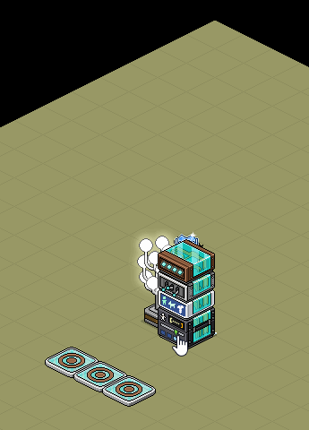
Achtung: Es wird auch ausgelöst, wenn sich niemand auf die Ringplatten befinden, um das zu verhindern benutze zusätzlich die Bedingung "Habbo auf Möbel".
1. "Das passende Möbel" beinhaltet folgende Optionen:
- Das auslösende Item nehmen (Standard)
- Ausgewählte Möbel nehmen
- Möbel vom Selektor nehmen
- Möbel vom Signal nehmen
2. "Möbel zum Vergleichen" beinhaltet folgende Optionen:
- Ausgewählte Möbel nehmen (Standard)
- Möbel vom Selektor nehmen
- Möbel vom Signal nehmen
- Das auslösende Item nehmen
Beide Erweiterungen treten nur in Kombination bei der Bedingung "Möbel stimmt überein" (und die Negativ-Bedingung davon) in Erscheinung. "Das passende Möbel" ist das Möbel, was kontrolliert wird. "Möbel zum Vergleichen" ist das korrekte Möbel (Muster). Im wesentlichen wird zunächst nur Überprüft, ob es sich um genau ein und dasselbe Möbel handelt und nicht um den Möbeltyp (außer es wird der Selektor Möbeltyp verwendet). Das nächste GIF zeigt die Einstellung über bestimmte Möbel, die nebeneinander sein müssen (in Pfeilrichtung):
"Tragen erlauben für" beinhaltet folgende Optionen:
Diese Erweiterung ist ausschließlich im Extra-Wired "User tragen" zu finden. Es kann definiert werden, ob bestimmte User getragen werden dürfen oder nicht getragen werden dürfen. Im Grunde ist es vergleichbar mit der Userquelle, außer dass die Option "Alle User im Raum" zusätzlich enthalten ist. Das GIF zeigt mehr zur Einstellung:
- Alle User im Raum (Standard)
- Den auslösenden User nehmen
- User vom Selektor nehmen
- User vom Signal nehmen
Diese Erweiterung ist ausschließlich im Extra-Wired "User tragen" zu finden. Es kann definiert werden, ob bestimmte User getragen werden dürfen oder nicht getragen werden dürfen. Im Grunde ist es vergleichbar mit der Userquelle, außer dass die Option "Alle User im Raum" zusätzlich enthalten ist. Das GIF zeigt mehr zur Einstellung:
Wired Extra: Bewegungsoptionen hat folgende Erweiterungen:
"Durch Möbel hindurch bewegen" beinhaltet folgende Optionen:
Alle Möbel, die aufgrund des Stapels bewegt werden wo sich das Add-on befindet, bewegen sich standardmäßig durch alle anderen Möbeln. In der Erweiterung wird nicht definiert welche Möbel diese Fähigkeit erhalten, sondern für welche Möbel sie diese Fähigkeit erhalten. Z. B. wird eine Ente bewegt und diese kann durch das definierte Möbel hindurch bewegt werden. Die Ente selbst wird in der Erweiterung nicht festgelegt, sondern steht bereits fest. Siehe Beispiel:
"Durch Möbel hindurch bewegen" beinhaltet folgende Optionen:
- Alle Möbel im Raum (Standard)
- Das auslösende Item nehmen
- Ausgewählte Möbel nehmen
- Möbel vom Selektor nehmen
- Möbel vom Signal nehmen
Alle Möbel, die aufgrund des Stapels bewegt werden wo sich das Add-on befindet, bewegen sich standardmäßig durch alle anderen Möbeln. In der Erweiterung wird nicht definiert welche Möbel diese Fähigkeit erhalten, sondern für welche Möbel sie diese Fähigkeit erhalten. Z. B. wird eine Ente bewegt und diese kann durch das definierte Möbel hindurch bewegt werden. Die Ente selbst wird in der Erweiterung nicht festgelegt, sondern steht bereits fest. Siehe Beispiel:
Achtung: Nicht jedes Möbel kann die Fähigkeit erhalten sich durch Möbel hindurch zu bewegen, da einige eine besondere Möbeleigenschaft aufweisen wie z. B. Freeze Boden, Rollschuhboden oder Banzai Boden. Das liegt daran, dass diese Möbel auf nichts anderes drauf können. Bei den meisten Wasserboden-Möbeln ist es sogar so, dass sie durch andere Möbel bewegt werden können, aber nicht wenn sie gegen andere Wasserboden-Möbeln bewegt werden. Es ist also jeweils zu prüfen, ob das Möbel dazu fähig ist.
"Durch Möbel blockiert" beinhaltet folgende Optionen:
Alle Möbel, die durch den Stapel wo sich das Add-on befindet bewegt werden, können durch die Erweiterung blockiert werden. Die Erweiterung definiert die Möbel, welche die Bewegung blockieren können. Das nächste GIF zeigt, dass auch ausgewählte Möbel blockieren können:
- Alle Möbel im Raum (Standard)
- Das auslösende Item nehmen
- Ausgewählte Möbel nehmen
- Möbel vom Selektor nehmen
- Möbel vom Signal nehmen
Alle Möbel, die durch den Stapel wo sich das Add-on befindet bewegt werden, können durch die Erweiterung blockiert werden. Die Erweiterung definiert die Möbel, welche die Bewegung blockieren können. Das nächste GIF zeigt, dass auch ausgewählte Möbel blockieren können:
"Durch User hindurch bewegen" beinhaltet folgende Optionen:
Alle Möbel, die durch den Stapel wo sich das Add-on befindet bewegt werden, können durch die Erweiterung durch User bewegt werden. Welche User das sein können definiert die Erweiterung:
- Alle User im Raum (Standard)
- Den auslösenden User nehmen
- User vom Selektor nehmen
- User vom Signal nehmen
Alle Möbel, die durch den Stapel wo sich das Add-on befindet bewegt werden, können durch die Erweiterung durch User bewegt werden. Welche User das sein können definiert die Erweiterung:
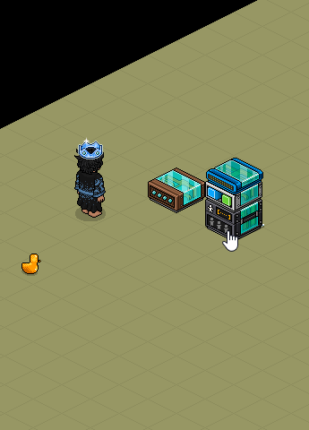
Ente bewegt sich nur durch winkende User hindurch
Wired Selektor: Möbel/User in (der) Nähe hat folgende Erweiterungen:
"In der Nähe von" beinhaltet folgende Optionen:
- Den auslösenden User nehmen (Standard)
- Ausgewählte Möbel nehmen
- Möbel vom Signal nehmen
- User vom Signal nehmen
- Das auslösende Item nehmen
Alle 5 Optionen befinden sich jeweils in den beiden Selektoren. Das heißt, "Möbel in Nähe" Selektor beinhaltet auch die userbezogenen Optionen und "User in der Nähe" beinhaltet ebenfalls die möbelbezogenen Optionen. Es ist also möglich einen Möbel auszuwählen, welches neben einen User steht oder einen User auszuwählen, der neben einen Möbel steht. Das GIF geht auf beide Selektoren ein:
Beim Anklicken des Leuchtballs werden alle Möbel im Umkreis des auslösenden Users ausgewählt für den Effekt. Das Möbel in direkter Nähe des Users wird also bewegt. Aber zu welchem User? Das bestimmt der Userselektor, indem überprüft wird, wer in direkter Nähe des Leuchtballs steht. Alle User in Nähe des Leuchtballs sind die Target-User.
"Quelle wählen" beinhaltet folgende Optionen:
Diese Bedingung überprüft wie viele User/Menge die Quelle bietet. Z. B. kann die Quelle ein Möbelselektor sein, wenn "Möbel vom Selektor nehmen" ausgewählt wurde. Diese Bedingung ist sehr nützlich, um Selektorbedingungen zu bauen. Hier ein Beispiel:
"Quelle wählen" beinhaltet folgende Optionen:
- Möbel vom Selektor nehmen (Standard)
- User vom Selektor nehmen
- Möbel vom Signal nehmen
- User vom Signal nehmen
- Das auslösende Item nehmen
- Den auslösenden User nehmen
Diese Bedingung überprüft wie viele User/Menge die Quelle bietet. Z. B. kann die Quelle ein Möbelselektor sein, wenn "Möbel vom Selektor nehmen" ausgewählt wurde. Diese Bedingung ist sehr nützlich, um Selektorbedingungen zu bauen. Hier ein Beispiel:
Wenn sich in der Nähe der Fliese mindestens ein Habbo befindet, wird der Stapel ausgelöst und dadurch die Fliese umgeschaltet. So wird der Selektor zur Bedingung, auch wenn Selektoren nicht im geringsten eine Bedingung darstellen. Aber die Menge Bedingung bezieht sich ja in dem Fall auf den Selektor und sobald der Selektor etwas ausgewählt hat, ist die Menge Bedingung erfüllt und es ist so als wäre der Selektor die Bedingung.
Wired Effekt: Signal senden hat folgende Erweiterungen:
"Antennen" beinhaltet folgende Optionen:
Im Signal-Effekt können nur Antennen ausgewählt werden, diese Erweiterung funktioniert ansonsten genauso wie die Möbelquelle.
"Möbel zum Weiterleiten" beinhaltet folgende Optionen:
Signale können nicht nur andere Stapel zum Auslösen bringen, sondern auch die Möbelquelle zum Stapel weiterleiten, der das Signal empfängt. Sehr hilfreich, um die Erweiterung in komplexeren Einstellungen zu nutzen.
Wired Effekt: Signal senden hat folgende Erweiterungen:
"Antennen" beinhaltet folgende Optionen:
- Ausgewählte Möbel nehmen (Standard)
- Möbel vom Selektor nehmen
- Möbel vom Signal nehmen
- Das auslösende Item nehmen
Im Signal-Effekt können nur Antennen ausgewählt werden, diese Erweiterung funktioniert ansonsten genauso wie die Möbelquelle.
"Möbel zum Weiterleiten" beinhaltet folgende Optionen:
- Möbel vom Selektor nehmen (Standard)
- Möbel vom Signal nehmen
- Das auslösende Item nehmen
Signale können nicht nur andere Stapel zum Auslösen bringen, sondern auch die Möbelquelle zum Stapel weiterleiten, der das Signal empfängt. Sehr hilfreich, um die Erweiterung in komplexeren Einstellungen zu nutzen.
Dieses GIF zeigt keine besonders hilfreiche oder nützliche Einstellung. Es dient nur dazu das Grundprinzip der Weiterleitung zu veranschaulichen. Kurz gesagt wurde eingestellt, dass das übernächste Möbel für den Effekt ausgewählt wird. Der Signal-senden-Stapel leitet das Möbel in Nähe von der dunklen Fliese weiter. Nämlich die helle Fliese. Die helle Fliese wird zum Signal-empfangen-Stapel weitergeleitet und von einem weiteren Nähe-Selektor aufgenommen. Dieser zweite Selektor übergibt nun das Möbel in Nähe der hellen Fliese an den Effekt. Und das ist dann die Ringplatte. Das Bild unten stellt die Reichweite dar:
"User zum Weiterleiten" beinhaltet folgende Optionen:
In dieser Erweiterung können auch User weitergeleitet werden. Das nächste GIF zeigt, dass mithilfe des Signalselektors (Selektor im Signal-senden-Stapel) Möbeln für den Userselektor ausgewählt werden kann.
- User vom Selektor nehmen (Standard)
- User vom Signal nehmen
- Den auslösenden User nehmen
In dieser Erweiterung können auch User weitergeleitet werden. Das nächste GIF zeigt, dass mithilfe des Signalselektors (Selektor im Signal-senden-Stapel) Möbeln für den Userselektor ausgewählt werden kann.
Der Userselektor benötigt Möbeln, um die User darauf für den Effekt auswählen zu können. Diese Möbel werden vom "Möbel im Bereich" Selektor ausgewählt. Hilfreich, wenn mehr als 20 Möbel ausgewählt werden müssen, besonders dann wenn es verschiedene Möbeltypen sind und man nicht auf Möbel treten darf, sondern nur auf den "BC Boden". Ansonsten hätte man das Wegteleportieren auch einfacher einstellen können. Dadurch wird das ganze aber ein sinnvolles Beispiel. Ein weiterer Vorteil der Signalweiterleitung ist der 3. Stapel im GIF. Es braucht keinen weiteren Selektor, wo sowieso dasselbe eingestellt worden wäre. Es übernimmt einfach die Möbel vom Signal und lässt alle Möbel die einen wegteleportieren auch noch bewegen.
"Signaloptionen" beinhaltet folgende Optionen:
Willkommen zur letzten Erweiterung, schön, dass Ihr es bis hierhin geschafft habt! Dieses Optionen können pro Möbel und/oder pro User einen Signal zum Stapel aussenden. Schauen wir uns zuerst für jeden Möbel senden an.
"Signaloptionen" beinhaltet folgende Optionen:
- Signal für jeden Möbel senden
- Signal für jeden User senden
Willkommen zur letzten Erweiterung, schön, dass Ihr es bis hierhin geschafft habt! Dieses Optionen können pro Möbel und/oder pro User einen Signal zum Stapel aussenden. Schauen wir uns zuerst für jeden Möbel senden an.
Ist die Option deaktiviert, werden die Möbel als Bündel weitergegeben. Das bedeutet, dass jeder Effekt, der sich auf die Signal-Möbelquelle bezieht alle Möbel vom Signal enthält und beim Auslösen alle Möbel einschließt. Das kann man als erstes im GIF sehen. Danach ist die Option aktiviert und es werden so viele Signale versendet wie es Möbel gibt, die weitergeleitet werden. Pro Signal wird also nur noch ein Möbel weitergeleitet, daher hat jeder Effekt ein anderes Möbel nun ausgewählt. Im GIF sind 3 Möbel betroffen, daher werden 3 Signale ausgesendet, obwohl ursprünglich nur ein Mal ausgelöst wurde.
Damit kommen wir zu einer weiteren Neuerung. "Damals" war es immer nur möglich, dass es eine Ausführung pro Auslösen gab. Also wenn Effekt wiederholen auslöst, wird ein Effekt nur einmal ausgeführt. Das kann jetzt dadurch verändert werden und ein Auslösen kann mehrere Ausführungen gleichzeitig bedeuten (bezogen auf den Signal-senden-Stapel). Zurück zum Kontext:
Diese 3 Signale, die durch einmaliges Auslösen entstanden sind und 3 Auslösungen gleichzeitig für den Empfänger-Stapel bedeuten, leiten also jeweils ein Möbel weiter. Um diese Verwirrung etwas aufzuheben ist es empfehlenswert das obige GIF erneut anzusehen.
Kommen wir kurz zum User. Mit dieser Option können auch Möbel und User gezählt werden. Das GIF zeigt wie eine Userzählung eingestellt werden kann:
Damit kommen wir zu einer weiteren Neuerung. "Damals" war es immer nur möglich, dass es eine Ausführung pro Auslösen gab. Also wenn Effekt wiederholen auslöst, wird ein Effekt nur einmal ausgeführt. Das kann jetzt dadurch verändert werden und ein Auslösen kann mehrere Ausführungen gleichzeitig bedeuten (bezogen auf den Signal-senden-Stapel). Zurück zum Kontext:
Diese 3 Signale, die durch einmaliges Auslösen entstanden sind und 3 Auslösungen gleichzeitig für den Empfänger-Stapel bedeuten, leiten also jeweils ein Möbel weiter. Um diese Verwirrung etwas aufzuheben ist es empfehlenswert das obige GIF erneut anzusehen.
Kommen wir kurz zum User. Mit dieser Option können auch Möbel und User gezählt werden. Das GIF zeigt wie eine Userzählung eingestellt werden kann:
Es werden ständig so viele Signale versendet wie es User im Raum gibt. Dadurch wird der Punktezähler jeweils 2 mal hochgeschaltet. Der Posi-Effekt sorgt dafür, dass der Zähler resettet wird und auf 00 zurückspringt. Da das Umschalten sofort danach passiert, ist es unsichtbar und die Anzahl der User im Raum erscheint.
Selektoren
Batch 10 beinhaltet folgende Wireds: 19 Selektoren (2 davon sind Filterselektoren), 1 Bedingung und 2 Effekte. Jeder Wired-Typ hat seine eigene Grundfunktion. Die Auslöser z. B. können einen Wired-Stapel aktivieren und ausführen lassen. Effekte können verschiedene Mechanismen, Interaktionen und vieles mehr in Gang setzen. Aber was können Selektoren? Kurz gesagt: Sie können die Auswahl von Möbeln und Usern innerhalb eines anderen Wireds verändern und bestimmen, falls dieses Wired eine erweiterte Einstellungsmöglichkeit hat. Sehen wir uns an was alle Selektoren gemeinsam haben (Beispiele gelten für Möbel- und Userselektoren gleichermaßen):
Befindet sich ein Selektor in einem Stapel, können sich alle erweiterbaren Wireds innerhalb desselben Stapels darauf beziehen. Allerdings muss zwischen Möbelselektoren und Userselektoren unterschieden werden. Ein Wired, dass NUR mit Möbel zutun hat, kann nicht mit einem Selektor verknüpft werden, der User auswählt und andersherum. Ein Beispiel zeigt, dass sich alle Wireds in einem Stapel gleichzeitig mit einen einzigen Selektor verknüpfen können:
Selektoren
Batch 10 beinhaltet folgende Wireds: 19 Selektoren (2 davon sind Filterselektoren), 1 Bedingung und 2 Effekte. Jeder Wired-Typ hat seine eigene Grundfunktion. Die Auslöser z. B. können einen Wired-Stapel aktivieren und ausführen lassen. Effekte können verschiedene Mechanismen, Interaktionen und vieles mehr in Gang setzen. Aber was können Selektoren? Kurz gesagt: Sie können die Auswahl von Möbeln und Usern innerhalb eines anderen Wireds verändern und bestimmen, falls dieses Wired eine erweiterte Einstellungsmöglichkeit hat. Sehen wir uns an was alle Selektoren gemeinsam haben (Beispiele gelten für Möbel- und Userselektoren gleichermaßen):
Befindet sich ein Selektor in einem Stapel, können sich alle erweiterbaren Wireds innerhalb desselben Stapels darauf beziehen. Allerdings muss zwischen Möbelselektoren und Userselektoren unterschieden werden. Ein Wired, dass NUR mit Möbel zutun hat, kann nicht mit einem Selektor verknüpft werden, der User auswählt und andersherum. Ein Beispiel zeigt, dass sich alle Wireds in einem Stapel gleichzeitig mit einen einzigen Selektor verknüpfen können:
Im GIF ist zu sehen, dass alle Farbfliesen im Raum durch den Selektor ausgewählt sind für den Tritt-auf Auslöser, Bewegungs-Effekt, Bedingung und Add-on.
Mithilfe von Signal-Wireds können (durch Selektoren) Möbel/User für einige Selektoren ausgewählt werden. Schauen wir uns dazu dieses Beispiel an:
Mithilfe von Signal-Wireds können (durch Selektoren) Möbel/User für einige Selektoren ausgewählt werden. Schauen wir uns dazu dieses Beispiel an:
Zuerst wird "Möbel auf Möbel" Selektor verwendet und die Ringplatte markiert. Option 1 ist eingestellt. Somit werden alle Möbel ausgewählt, die sich oberhalb der Ringplatte befinden. Im 2. Stapel befindet sich Möbeltyp-Selektor und wählt die Möbel vom Signal aus. Also das Möbel was auf der Ringplatte steht. Dadurch sind jetzt alle gleichartigen Möbel im gesamten Raum ausgewählt. Der 3. Stapel hat Möbelnähe-Selektor und dieser wählt ebenfalls Möbel vom Signal aus. Somit sind alle Möbeln ausgewählt, die vom selben Typ sind wie das auf der Ringplatte und der 3. Selektor selbst wählt nun für den Effekt das Möbel aus, was sich in der nähe von allen "Ringplatten-Möbeln" befindet. So kann die Möbel-/Userauswahl einiger Selektoren durch andere Selektoren bestimmt werden.
In einem Stapel können sich auch mehrere Selektoren befinden. Angenommen es befinden sich Möbelbereich- und Möbel auf Möbel Selektor in einem Stapel, dann würde sich ein Wired auf beide beziehen und alle Möbel auswählen, die beide zusammen zur Verfügung stellen. Es würde sich also einfach addieren:
In einem Stapel können sich auch mehrere Selektoren befinden. Angenommen es befinden sich Möbelbereich- und Möbel auf Möbel Selektor in einem Stapel, dann würde sich ein Wired auf beide beziehen und alle Möbel auswählen, die beide zusammen zur Verfügung stellen. Es würde sich also einfach addieren:
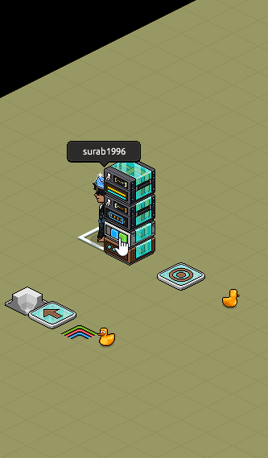
Möbel im Bereich UND Möbel auf Ringplatte werden ausgewählt
Falls sich die Ringplatte im markierten Bereich befinden würde, wäre das nicht weiter schlimm. Überschneidungen der Selektoren haben keinen negativen Einfluss. Übrigens können Möbel - und Userselektoren in einem Stapel vorhanden sein. Siehe Beispiel:
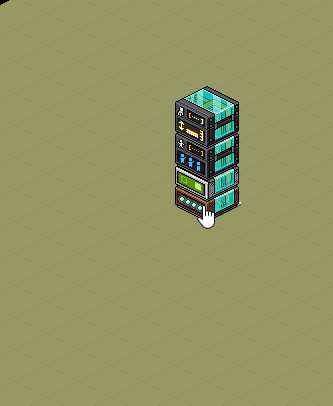
Teleport-Wired bezieht sich auf 2 verschiedene Selektoren
Bis auf Filterselektoren hat jeder Selektor "Wähler-Optionen": 1. Vorhandene Auswahl filtern und 2. Umkehren. In beiden können Haken gesetzt werden. Wenn Vorhandene Auswahl filtern aktiv ist, erscheint an der Selektorbox ein Filter-Zeichen.
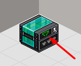
Filter-Symbol
In diesem Zustand funktioniert ein Selektor nur in Kombination mit mindestens einem weiteren, beliebigen und ungefilterten Selektor. Wichtig ist nur: Der weitere Selektor muss ein Möbelselektor sein, wenn der gefilterte Selektor ein Möbelselektor ist, aber ein Userselektor sein, wenn der gefilterte ein Userselektor ist. Aber was bewirkt die Filterfunktion überhaupt? Das zeigt das folgende GIF:
Nach dem ungefilterten Möbelnähe Selektor sollte alles was sich in der nähe der Ringplatte befindet sich normalerweise drehen. Es werden aber nur die Möbel gedreht, die sich auf der Druckplatte befinden, außer die Druckplatte befindet sich nicht in der nähe der Ringplatte. Das bedeutet, der ungefilterte Selektor wird beschränkt auf den gefilterten. Möbelnähe wählt zunächst alles aus was sich in der nähe der Ringplatte befindet, dann wird gefiltert auf die Möbel, die auch auf der Druckplatte sind. Man könnte sagen, beide Selektoren sind fusioniert und arbeiten jetzt als ein Selektor.
Die Option Umkehren bedeutet, dass der Selektor sozusagen negativ funktioniert. Im Englischen heißt die Funktion Invert. Der Selektor wirkt also invertiert. Das bedeutet alles im Raum wird ausgewählt, außer das was der Selektor normalerweise auswählen würde, wenn er nicht invertiert ist. Wird ein Selektor ungefiltert umgekehrt und gespeichert, dann erscheint jedes Mal ein Warnfenster.
Die Option Umkehren bedeutet, dass der Selektor sozusagen negativ funktioniert. Im Englischen heißt die Funktion Invert. Der Selektor wirkt also invertiert. Das bedeutet alles im Raum wird ausgewählt, außer das was der Selektor normalerweise auswählen würde, wenn er nicht invertiert ist. Wird ein Selektor ungefiltert umgekehrt und gespeichert, dann erscheint jedes Mal ein Warnfenster.
Invert sollte also mit absolut größter Vorsicht verwendet werden, das gilt auch für alle erfahrenen Wired-Experten. Sogar einige Wired-Tester (mich eingeschlossen) hatten ihre eigenen Räume mehr oder weniger damit durcheinander gewirbelt. Deshalb hat sirjonasxx während der Testphase diesen Warnfenster erstellt. Schauen wir uns an wie Invert ungefiltert funktioniert:
Der Bereichselektor wählt keinen Bereich aus und normalerweise würde er auch deshalb keine Möbel auswählen. Da er jetzt aber umgekehrt ist wählt er alles aus außer das was im Bereich ausgewählt wäre. Da wir keinen Bereich ausgewählt haben, wählt er dementsprechend alles im Raum aus.
Wenn der Selektor gefiltert umgekehrt wird, dann erscheint die Meldung nicht, da ein ungefilterter Selektor die Grenze vorgibt. Ein Beispiel wird das erklären:
Alles außerhalb des Bereichs wird ausgewählt, aber nur wenn es vom Möbeltyp "Helle Fliese" ist. Die Grenze gibt also Möbeltyp vor.
Zum Abschluss werden alle Batch 10 Wireds aufgelistet mit jeweils einer Beschreibung.
Zum Abschluss werden alle Batch 10 Wireds aufgelistet mit jeweils einer Beschreibung.
Batch 10 Wired-Liste

WIRED Selektor: Möbel im Bereich
Wählt alle Möbel im ausgewählten Bereich. Mit der Funktion "Bereich wählen" kann ein helles Feld gezogen werden, wenn die linke Maustaste gedrückt gehalten wird und auf den Boden gezielt wird. Mit "Löschen" wird der Bereich entfernt. Die Umgebung wird transparent beim öffnen des Wired-Fensters, damit auch versteckte Möbel gesehen werden können, die mit ausgewählt werden.

WIRED Selektor: Möbel in Nähe
Wählt alle Möbel aus, die sich in der Nähe von ▢ (Bezugspunkt) befinden. x kann eingestellt werden unter "In der Nähe von". Im Wired-Fenster befindet sich ein Bodeneditor ähnlich wie beim BC Bodenlayout-Editor. Das grüne Plus wählt einzelne Böden in blau per Linksklick aus. Dunkle Böden sind nicht ausgewählte Böden. Das rote Kreuz löscht die Auswahl einzelner Böden per Klick. Alternativ kann mit der gedrückten Umschalttaste ⇧ und gedrückter Maustaste ein Bereich gezogen oder gelöscht werden im Editor (nicht wie Bereichselektor). Rechts neben den beiden Buttons befindet sich ein weiterer Button, der wie ein blauer, quadratischer Rahmen aussieht. Das ist der Bezugspunkt ▢ wie Anfangs erwähnt. Der Bezugspunkt kann per Klick umgesetzt werden oder mithilfe der Koordinaten bestimmt werden. Die Koordinate (0|0) ist der Startwert und befindet sich in der Mitte des Editors. Die Koordinaten sind unten rechts vom Editor zu finden und werden als x: 0 y: 0 ausgedrückt. Die x- und y-Werte können zwischen -64 bis 64 sein. Ab dem Wert 6 bzw -6 ist der Bezugspunkt nicht mehr im Editor zu sehen, weil die Boden-Anzeige nur von -5 bis 5 geht.

WIRED Selektor: Möbel nach Typ
Wählt alle gleichen Möbel aus, die vom selben Möbeltyp sind wie das markierte Möbel. Gemeint sind damit aber nicht, z. B. alle Teppich-Möbel als ein Typ, da es verschiedene Teppiche gibt. Es geht also niemals um übergeordnete Gruppen oder Set-Möbeln (z. B. Pandabären, Ameisenbären...). Wenn z. B. Gelbes Faultier ausgewählt ist, dann werden alle Möbel ausgewählt die "Gelbes Faultier" heißen. Wenn aber zwei verschiedene Möbel exakt gleiche Namen haben (so wie Riesenfalter), werden beide nicht als ein Typ angenommen, es muss auch dasselbe aussehen haben. Zwei gleiche LTD Möbel haben zwar unterschiedliche Nummern, aber im Shop stehen sie nicht separat aufgeführt, haben denselben Namen und das gleiche Aussehen und werden daher als einen Möbeltyp aufgenommen. Das alles gilt auch für NFT-Möbel.
Die Funktion "Möbel nur auswählen, wenn Zustand übereinstimmt" kann mit einem Haken ausgewählt werden und bedeutet, dass nur die Möbeln vom selben Typ ausgewählt werden, die auch den gleichen Möbelzustand haben wie das markierte Möbel, was im Möbeltyp Selektor ausgewählt wurde. Z. B. eine Farbfliese ist rot und diese ist markiert, dann sind alle Farbfliesen mit rotem Zustand ausgewählt und alle anderen Farbfliesen mit anderer Farbe nicht. Wenn jetzt aber das markierte Möbel den Zustand wechselt, gilt dann sofort der neue Zustand! Z. B. die Farbfliese wird grün, dann sind nur alle grünen Farbfliesen ganz automatisch ausgewählt.
Die Funktion "Möbel nur auswählen, wenn Zustand übereinstimmt" kann mit einem Haken ausgewählt werden und bedeutet, dass nur die Möbeln vom selben Typ ausgewählt werden, die auch den gleichen Möbelzustand haben wie das markierte Möbel, was im Möbeltyp Selektor ausgewählt wurde. Z. B. eine Farbfliese ist rot und diese ist markiert, dann sind alle Farbfliesen mit rotem Zustand ausgewählt und alle anderen Farbfliesen mit anderer Farbe nicht. Wenn jetzt aber das markierte Möbel den Zustand wechselt, gilt dann sofort der neue Zustand! Z. B. die Farbfliese wird grün, dann sind nur alle grünen Farbfliesen ganz automatisch ausgewählt.
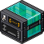
WIRED Selektor. Möbel mit Höhe
Wählt alle Möbel aus, die die eingestellte Höhe haben. Unter "Typ auswählen" gibt es 3 Optionen. 1. Tiefer als, 2. Ist gleich, 3. Höher als. Die 3 Optionen sind mit "Höhe auswählen" verbunden und und kann zwischen 0.00 bis 40.00 in 0.01-Schritten eingestellt werden.

WIRED Selektor: Möbel auf Möbel
Wählt alle Möbel aus, die sich auf/unter/in dem markierten Möbel befinden. Es gibt 4 "Möbelauswahloptionen". 1. Möbel auf Möbel, 2. Möbel unter Möbel. Die beiden sind selbsterklärend. 3. Möbel auf der gleichen Höhe - bedeutet, dass das Möbel sich im markierten Möbel befindet, also ineinander sind. 4. Alle Möbel an der Fliese - bedeutet, dass alle Möbel ausgewählt werden, ob über, unter oder im markierten Möbel. Man könnte auch sagen, wenn es auf denselben Boden ist, wird es ausgewählt.
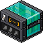
WIRED Selektor: Ausgewählte Möbel
Wählt alle Möbel aus, die im Selektor ausgewählt wurden. Nützlich, wenn man bestimmte Möbel rein- oder rausfiltern möchte.
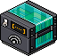
WIRED Selektor: Möbel vom Signal
Wählt alle vom Signal weitergeleiteten Möbel aus. Nützlich bei einer Signal-Kette, Zusammenfassung mehrerer Selektoren in einem Selektor oder zum filtern.
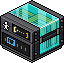
WIRED Selektor: User im Bereich
Wählt alle User im ausgewählten Bereich. Mit der Funktion "Bereich wählen" kann ein helles Feld gezogen werden, wenn die linke Maustaste gedrückt gehalten wird und auf den Boden gezielt wird. Mit "Löschen" wird der Bereich entfernt. Die Umgebung wird transparent beim öffnen des Wired-Fensters, damit auch versteckte User hinter Möbel gesehen werden können, die mit ausgewählt werden. Bots und Haustiere werden von diesem Selektor auch als User erkannt.

WIRED Selektor: User in Nähe
Wählt alle User aus, die sich in der Nähe von ▢ (Bezugspunkt) befinden. x kann eingestellt werden unter "In der Nähe von". Im Wired-Fenster befindet sich ein Bodeneditor ähnlich wie beim BC Bodenlayout-Editor. Das grüne Plus wählt einzelne Böden in blau per Linksklick aus. Dunkle Böden sind nicht ausgewählte Böden. Das rote Kreuz löscht die Auswahl einzelner Böden per Klick. Alternativ kann mit der gedrückten Umschalttaste ⇧ und gedrückter Maustaste ein Bereich gezogen oder gelöscht werden im Editor (nicht wie Bereichselektor). Rechts neben den beiden Buttons befindet sich ein weiterer Button, der wie ein blauer, quadratischer Rahmen aussieht. Das ist der Bezugspunkt ▢ wie Anfangs erwähnt. Der Bezugspunkt kann per Klick umgesetzt werden oder mithilfe der Koordinaten bestimmt werden. Die Koordinate (0|0) ist der Startwert und befindet sich in der Mitte des Editors. Die Koordinaten sind unten rechts vom Editor zu finden und werden als x: 0 y: 0 ausgedrückt. Die x- und y-Werte können zwischen -64 bis 64 sein. Ab dem Wert 6 bzw -6 ist der Bezugspunkt nicht mehr im Editor zu sehen, weil die Boden-Anzeige nur von -5 bis 5 geht. Bots und Haustiere werden von diesem Selektor auch als User erkannt.

WIRED Selektor: User nach Typ
Wählt alle Entitäten vom selben Typ aus. Unter Typ gibt es 3 Optionen. 1. Habbo (User), 2. Haustier, 3. Bot. Es kann nur einer der 3 ausgewählt werden, dann werden alle vom selben Typ im Raum ausgewählt.

WIRED Selektor: User vom Signal
Wählt alle vom Signal weitergeleiteten User aus. Nützlich bei einer Signal-Kette, Zusammenfassung mehrerer Selektoren in einem Selektor oder zum filtern. Bots und Haustiere werden von diesem Selektor auch als User erkannt.
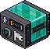
WIRED Selektor: User in Team
Wählt alle User aus, die im Team sind. Unter "Team auswählen" gibt es 5 Optionen. 1. Jegliches Team bedeutet, dass alle die in irgendeinem Team sind ausgewählt werden. Die weiteren 4 Optionen bestimmen welche Teamfarbe ausgewählt werden soll (Rot, Grün, Blau, Gelb).
Bots werden von diesem Selektor auch als User erkannt. Wenn Umkehren aktiv ist, dann auch Haustiere.
Bots werden von diesem Selektor auch als User erkannt. Wenn Umkehren aktiv ist, dann auch Haustiere.

WIRED Selektor: User nach Aktion
Wählt alle User aus, die eine Aktion/Handlung ausführen oder sich in einer Aktion/Handlung befinden. Welche Aktionen/Handlungen es alle gibt erfährst du hier. Bots und Haustiere werden von diesem Selektor auch als User erkannt.

WIRED Selektor: User nach Name
Wählt alle User mit eingetragenen Namen aus. Groß- und Kleinschreibung kann unberücksichtigt werden. Wichtig ist, dass keine Leerzeichen vor oder nach dem Namen erscheinen. Mehrere Namen müssen mit Enter ⏎ getrennt werden. Bots und Haustiere werden von diesem Selektor auch als User erkannt.
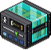
WIRED Selektor: User auf Möbel
Wählt alle User auf den markierten Möbel aus. Bots und Haustiere werden von diesem Selektor auch als User erkannt.
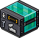
WIRED Selektor: User mit Handitem
Wählt alle User mit Handitems aus. Keine, Saft, Milch, Wasser, Kaffee, Koffeinfrei, Milchkaffee oder Arabischer Tee kann Standardmäßig ausgewählt werden. Mit der Funktion "Mein Handitem kopieren" kann das Handitem hinzugefügt werden, was derjenige hält, der auf diesen Button drückt. Eine Liste von Handitems, die nicht unterstützt werden beim Kopieren findest du hier (keine Gewähr auf Aktualität und Vollständigkeit). Bots werden von diesem Selektor auch als User erkannt. Wenn Umkehren aktiv ist, dann auch Haustiere.

WIRED Selektor: User in Gruppe
Wählt alle User in der ausgewählten Gruppe aus. Die Funktion "Aktuelle Gruppe" bezieht sich auf die Gruppe mit dem Gruppenraum, wo dieser Selektor liegt. Wenn der Raum keine Gruppe besitzt, wird auch keiner ausgewählt. "Von der Liste auswählen" zeigt alle Gruppen an, die der Wired-Einsteller besitzt. Wenn Umkehren aktiv ist, werden Bots und Haustiere von diesem Selektor auch als User erkannt.

WIRED Filter: Filter auf X User
Filtert zufällige User von 1 bis 100 von einem Userselektor. Dieser Filterselektor funktioniert nur in Kombination mit einem Userselektor und ist immer auf Filtern eingestellt (kann nicht umgestellt werden). Falls der Userselektor z. B. 10 User auswählt und der Filterselektor auf 3 eingestellt ist, dann werden nur 3 User von den 10 zufällig ausgewählt. Bots und Haustiere werden von diesem Selektor auch als User erkannt.
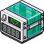
WIRED Filter: Filter auf X Möbel
Filtert zufällige Möbel von 1 bis 100 von einem Möbelselektor. Dieser Filterselektor funktioniert nur in Kombination mit einem Möbelselektor und ist immer auf Filtern eingestellt (kann nicht umgestellt werden). Falls der Möbelselektor z. B. 10 Möbel auswählt und der Filterselektor auf 3 eingestellt ist, dann werden nur 3 Möbel von den 10 zufällig ausgewählt.

WIRED Bedingung: Ausgewählte Menge
Mehr Infos zu diesem Wired gibt es hier.
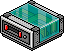
WIRED-Effekt: Möbel zu Möbel bewegen
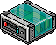
WIRED Effekt: Möbel zu User bewegen